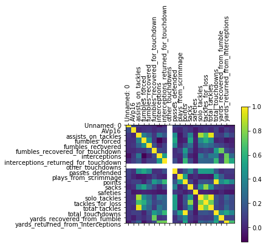
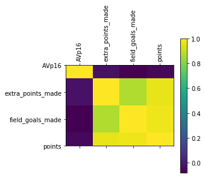
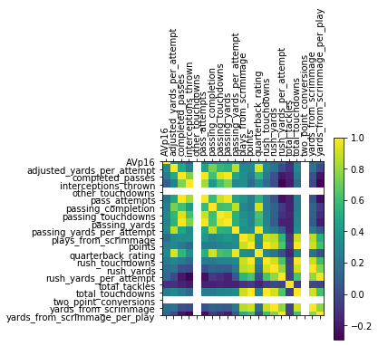
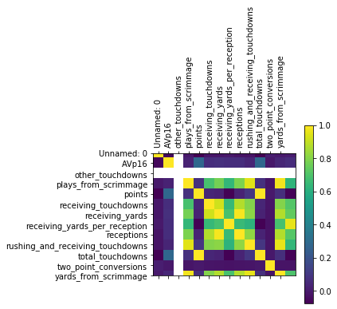
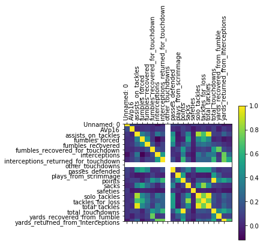
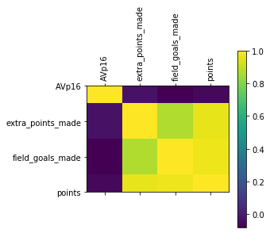
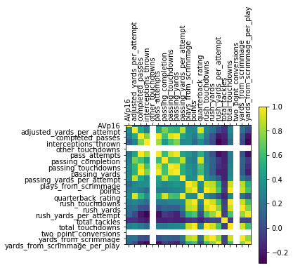
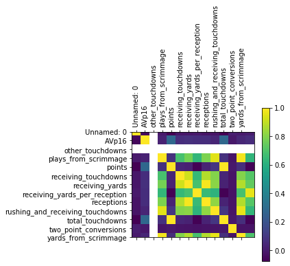

NFL STATS: How did we do it?
Background
Our data was collected through Sportreference. Sportsreference is a free python API that pulls the stats from www.sports-reference.com and allows them to be easily be used in python-based applications, especially ones involving data analytics and machine learning.
Sportsreference exposes a plethora of sports information from major sports leagues in North America, such as the NBA, MLB, and NFL. We chose to work with the NFL data. (of course!) Check out Sports Reference here!
Our Data
We used the NFL package to pull our data from Sports Reference. We also pulled the NCAA football data. We installed sportsreference and used python to pull in the
data. We collected an abundance of metrics and information from the NFL and NCAA. We collected many CSVs and began the process. We used Python to import much of the information. We imported teams, rosters, and players.
From there we used several arrays to organize the data. We did this for both the NFL data and the NCAA data. From there we trained our model and created visualizations through Tableau.
Keep Reading!
While pulling the data together, you will notice in our code that we imported teams, rosters, and players. Team in the core module and exposed metrics on a team-by-team basis, such as current records, total points, interceptions, and more.
We passed our desired years as a string while instantiating the "Team" class. From there we created a Pandas Dataframe of all statitical categories for all of the teams in the nFL AND NCAA.
As stated before, we also imported players and rosters. Take a look at our code below to get an idea of how we did it.

*Snippet of our code
APPROXIMATE VALUE
One of our main goal in training the data was to find the approximate value. We attempted to put a single number on the seasonal value of a player at any position from the year.
Approximate value isn't considered the end all be all metric. It is considered a way to find the overall value of a player instead of just going by a single metric such as how many touchdowns
a player scored. Essentially, AV is a substitute for --- and a significant improvement upon, in my opinion --- metrics like 'number of seasons as a starter' or 'number of times making the pro bowl' or the like. You should think of it as being essentially like those two metrics, but with interpolation in between. That is, 'number of seasons as a starter' is a reasonable starting point if you're trying to measure, say, how good a particular draft class is, or what kind of player you can expect to get with the #13 pick in the draft. But obviously some starters are better than others. Starters on good teams are, as a group, better than starters on bad teams. Starting WRs who had lots of receiving yards are, as a group, better than starting WRs who did not have many receiving yards. Starters who made the pro bowl are, as a group, better than starters who didn't, and so on. And non-starters aren't worthless, so they get some points too.
Approximate Value
Still confused about what approximate value is? Click here for more info! Click here!
Below are some addiotional visualizations of our dataset.

Defense Correlation

Kicker Correlation

Quarter Back Correlation

Running Back Correlation
Wide Receiver Correlation
Background
Our data was collected through Sportreference. Sportsreference is a free python API that pulls the stats from www.sports-reference.com and allows them to be easily be used in python-based applications, especially ones involving data analytics and machine learning.
Sportsreference exposes a plethora of sports information from major sports leagues in North America, such as the NBA, MLB, and NFL. We chose to work with the NFL data. (of course!) Check out Sports Reference here!
Our Data
We used the NFL package to pull our data from Sports Reference. We also pulled the NCAA football data. We installed sportsreference and used python to pull in the data. We collected an abundance of metrics and information from the NFL and NCAA. We collected many CSVs and began the process. We used Python to import much of the information. We imported teams, rosters, and players. From there we used several arrays to organize the data. We did this for both the NFL data and the NCAA data. From there we trained our model and created visualizations through Tableau. Keep Reading!
While pulling the data together, you will notice in our code that we imported teams, rosters, and players. Team in the core module and exposed metrics on a team-by-team basis, such as current records, total points, interceptions, and more. We passed our desired years as a string while instantiating the "Team" class. From there we created a Pandas Dataframe of all statitical categories for all of the teams in the nFL AND NCAA. As stated before, we also imported players and rosters. Take a look at our code below to get an idea of how we did it.
*Snippet of our code
APPROXIMATE VALUE
One of our main goal in training the data was to find the approximate value. We attempted to put a single number on the seasonal value of a player at any position from the year. Approximate value isn't considered the end all be all metric. It is considered a way to find the overall value of a player instead of just going by a single metric such as how many touchdowns a player scored. Essentially, AV is a substitute for --- and a significant improvement upon, in my opinion --- metrics like 'number of seasons as a starter' or 'number of times making the pro bowl' or the like. You should think of it as being essentially like those two metrics, but with interpolation in between. That is, 'number of seasons as a starter' is a reasonable starting point if you're trying to measure, say, how good a particular draft class is, or what kind of player you can expect to get with the #13 pick in the draft. But obviously some starters are better than others. Starters on good teams are, as a group, better than starters on bad teams. Starting WRs who had lots of receiving yards are, as a group, better than starting WRs who did not have many receiving yards. Starters who made the pro bowl are, as a group, better than starters who didn't, and so on. And non-starters aren't worthless, so they get some points too.
Approximate Value
Still confused about what approximate value is? Click here for more info! Click here!
Below are some addiotional visualizations of our dataset.
Defense Correlation
Kicker Correlation
Quarter Back Correlation
Running Back Correlation
Wide Receiver Correlation